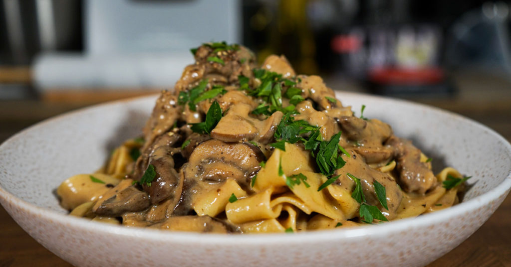

Beef Stroganoff

Description
a Russian dish of sautéed beef in a creamy, sour cream sauce with onions and mushrooms. It's often served over pasta or rice.
Ingredients
- beef
- mushrooms
- onions
- flour
- beef broth
- sour cream
- egg noodles
Instructions:
- In a large skillet, heat olive oil over medium-high heat.
- Add the sliced beef to the skillet and cook until browned. Remove and set aside.
- In the same skillet, add onions and garlic, cooking until softened (about 3 minutes).
- Add the sliced mushrooms and cook until they release their moisture and become tender (about 5 minutes).
- Sprinkle the flour over the mushrooms and stir to combine. Cook for 1 minute to form a roux.
- Slowly pour in the beef broth while stirring to avoid lumps.
- Add Worcestershire sauce and Dijon mustard, and stir to combine.
- Bring the mixture to a simmer and cook for 5-7 minutes until the sauce thickens.
- Return the cooked beef to the skillet and stir in the sour cream until fully incorporated.
- Season with salt and pepper to taste.
- Serve over cooked egg noodles or rice, and garnish with chopped parsley.